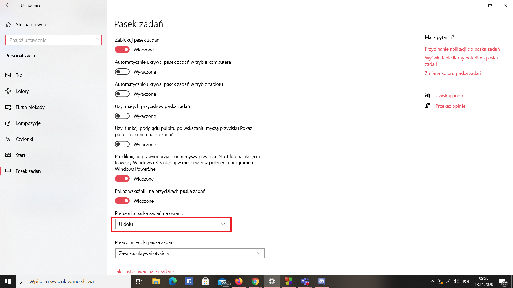

POWRÓT
1.Kliknij prawym przyciskiem myszy na pusty obszar na pasku zadañ
2.Wybierz ustawienia paska zadañ
3.Kliknij na po³o¿enie paska zadañ na ekranie i wybierz gdzie chcesz mieæ aktualnie pasek zadañ

Projekt realizowany na olimpiadê "Zwolnieni z Teorii" Nie ma twojego problemu? Skontaktuj siê z nami poprzez formularz
Wszystkie prawa zastrze¿one Kopiowanie i rozpowszechnianie bez zgody Nak³adka E-Pomocy zabronione